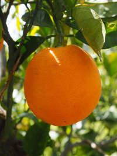

All About Orange
Surprisingly, the color orange has a deeper history than simply being giving its name due to sharing the same color as a
fruit. Orange has roots in Old English, where it was referred to "as "geoluhread",
which means yellow-red" ("Intro to the oranges").
The yellow-red description of the color leads to its designation as a warm color, as both yellow and red are warm colors
("Basic color schemes - Introduction to Color Theory").
The modern-day word, however, is still a result of the fruit despite the more unique Old English origins.
Orange became adopted into english through the Spanish word "naranja", which is much more similar to the orange that is known and
loved by many today("Intro to the oranges").
Just as it shares many different roots, orange has many different cultural contexts.
In the Netherlands, orange represents the royal family and therefore royalty, while in Japanese and Chinese cultures, orange represents courage
and happiness (SmarterTravel).
Conversely, orange signifies mourning in Egypt (SmarterTravel). In Western countries, orange evokes feelings of energy and
enthusiasm ("Intro to the oranges").

The orange fruit.
Back to the top
|
Sources Used
"#FF9900 Hex Web Color." #FF9900 Hex Color | RGB: 255, 153, 0 | ORANGE, ORANGE PEEL, Color Combos, www.colorcombos.com/colors/FF9900.
Accessed 24 Sept. 2017.
"Basic color schemes - Introduction to Color Theory." Basic color schemes: Color Theory Introduction, Tiger Color,
www.tigercolor.com/color-lab/color-theory/color-theory-intro.htm. Accessed 24 Sept. 2017.
Braxmeier, Hans. “Orange, Fruit, Orange Tree.” Pixabay, Pixabay, pixabay.com/en/orange-fruit-orange-tree-1117522/. Accessed 24 Sept. 2017.
"Intro to the oranges." Pigments through the Ages - Intro to the oranges, WebExhibits, www.webexhibits.org/pigments/intro/oranges.html.
Accessed 24 Sept. 2017.
SmarterTravel. "What Colors Mean in Other Cultures." The Huffington Post, TheHuffingtonPost.com, 26 Jan. 2016,
www.huffingtonpost.com/smartertravel/what-colors-mean-in-other_b_9078674.html. Accessed 24 Sept. 2017.
|